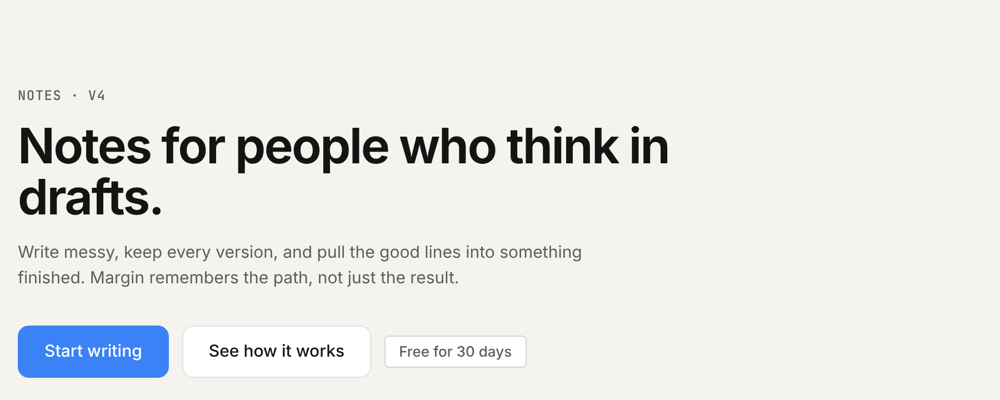
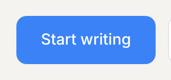
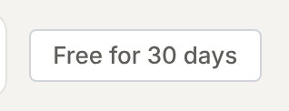
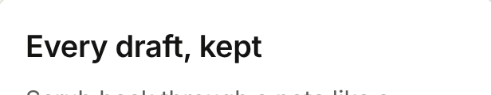
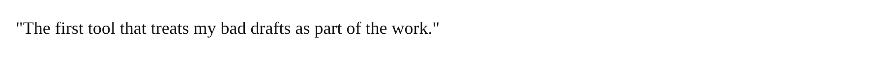
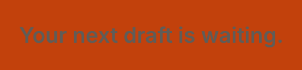

taste-lint
73
Below 80Margin · DESIGN.md check
11 distinct problems across 34 elements · 1280px
Type · 700
Font weight 700 on a isn't used in DESIGN.md
Use 650
Spacing · 40px
Spacing 40px on section.hero is off the scale
Use spacing.2xl (32px)
Colour · #3B82F6
Off-palette background colour #3B82F6 on a.btn
Use colors.accent (#C2410C)
Contrast · #FFFFFF on #3B82F6
Text "Start writing" is 3.68:1, needs 4.5:1
Use colors.ink (#141413) on this background
Colour · #D1D5DB
Off-palette border colour #D1D5DB on span.chip
Use colors.line (#E4E2DD)
Radius · 4px
Corner radius 4px on span.chip isn't a rounded token
Use rounded.sm (6px)Spacing · 18px
Spacing 18px on article.card is off the scale
Use spacing.lg (16px)
Radius · 12px
Corner radius 12px on article.card isn't a rounded token
Use rounded.md (10px)
Type · 19px
Font size 19px on h3 isn't on the type scale
Use typography.title (18px)
Type · Georgia
Font Georgia on p isn't in DESIGN.md
Use Inter
Contrast · #5E5D59 on #C2410C
Text "Your next draft is waiti" is 1.27:1, needs 4.5:1
Use colors.accent-ink (#FFFFFF) on this background